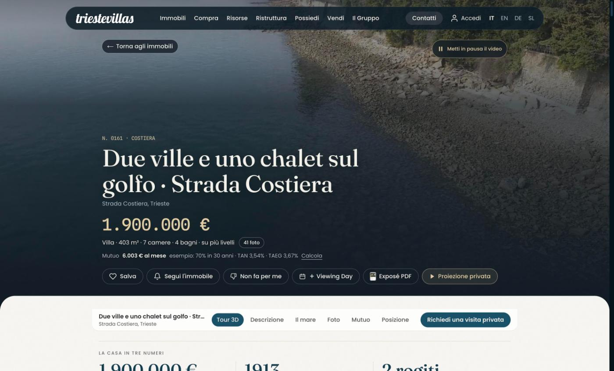
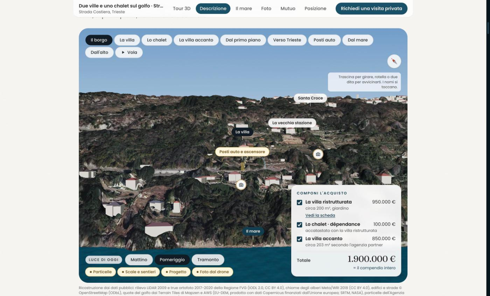
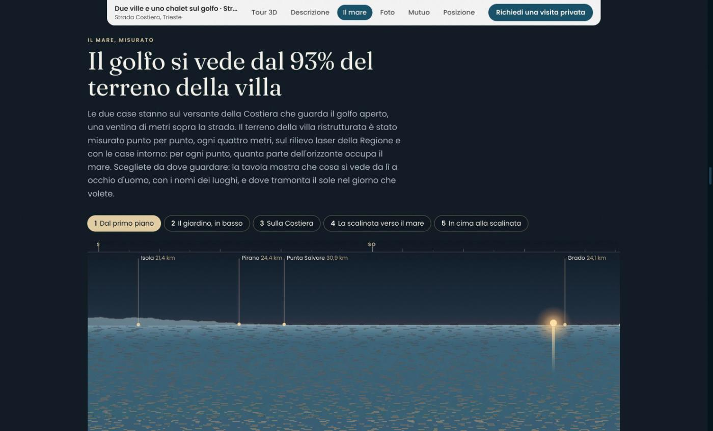
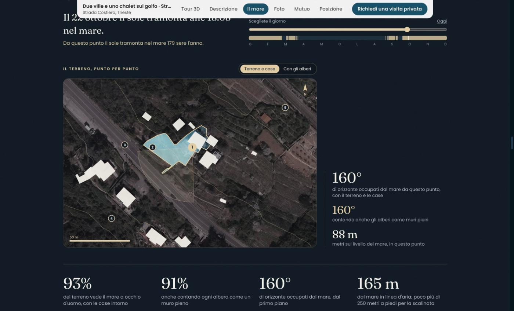
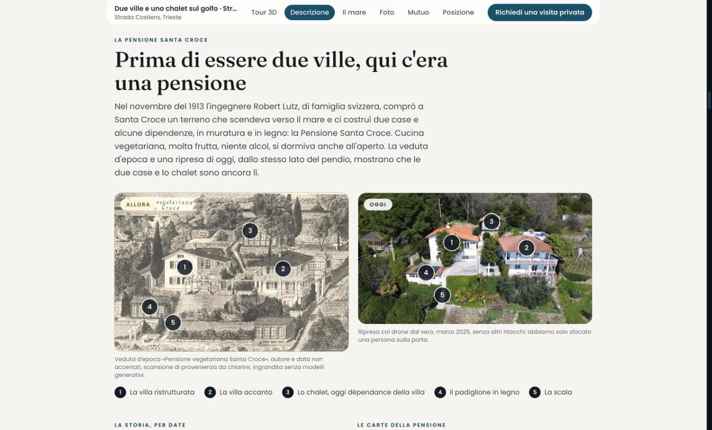
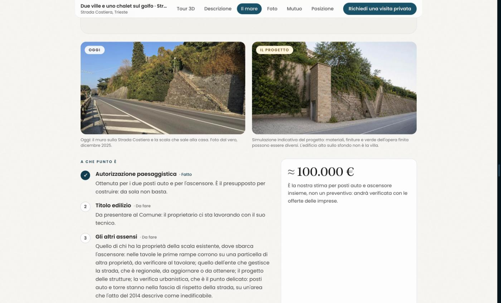
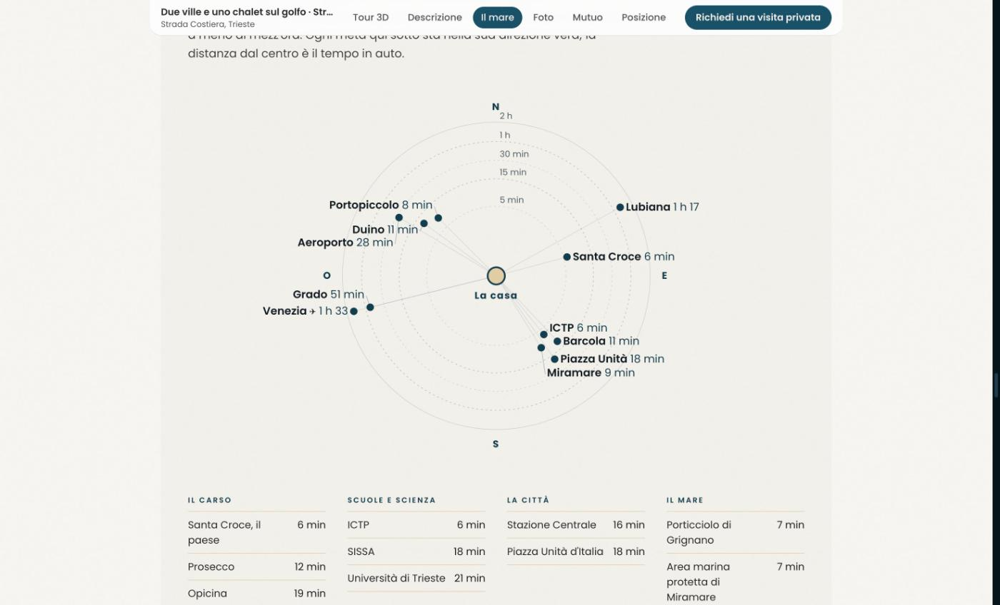

Due ville, uno chalet e un annuncio come non l'avevamo mai visto
Con Martino Coppola di Canzano e TriesteVillas abbiamo pubblicato la scheda di due ville e uno chalet sulla Strada Costiera di Trieste. L'abbiamo costruita lavorando con Claude, ed è la cosa più precisa che abbiamo mai messo online. Qui racconto cosa c'è dentro e perché per noi conta.

Perché ne scrivo
Un annuncio immobiliare, di solito, è fatto così: qualche foto, i metri quadri, «vista mare», «a due passi da tutto». Chi compra deve fidarsi, e il resto lo scopre alla visita o dal notaio.
Con la scheda 0161 abbiamo provato a fare il contrario: ogni cosa che si può misurare, misurata; ogni dato con la sua fonte; e quello che non sappiamo o che manca, scritto. Quando l'abbiamo vista finita, con Martino ci siamo detti la stessa cosa: un livello di dettaglio così non l'avevamo mai visto, in nessun annuncio. Nemmeno nei nostri.
Il borgo in 3D, e il prezzo che si compone
La proprietà è insolita: due ville e uno chalet di legno, con due proprietari diversi e due agenzie in collaborazione. Spiegarlo a parole è faticoso, così il pendio è stato ricostruito in 3D dai dati pubblici della Regione, il rilievo laser e le ortofoto, con le tre costruzioni in vendita.
Accanto c'è un riquadro, Componi l'acquisto: la villa ristrutturata 950.000 €, lo chalet 100.000 €, la villa accanto 850.000 €. Togli una voce e nel modello si spegne. Sotto c'è scritto chiaro che comprare tutto vuol dire firmare due rogiti, e che la villa ristrutturata senza lo chalet si può comprare solo dopo il frazionamento, perché al catasto sono una sola unità.

Il mare, misurato punto per punto
«Vista mare» è la frase più abusata del settore. Qui il terreno della villa è stato misurato ogni quattro metri: per ogni punto, quanta parte dell'orizzonte è mare, a occhio d'uomo e con le case intorno. Risultato: il golfo si vede dal 93% del terreno, dal 91% anche contando ogni albero come un muro pieno. Dal primo piano il mare occupa 160° di orizzonte.
La tavola dell'orizzonte mostra cosa si vede davvero, con i nomi dei luoghi: Isola a 21,4 km, Pirano, Punta Salvore, Grado. Scegli un giorno dell'anno e vedi dove tramonta il sole; da lì, nel mare, 179 sere l'anno.

Sotto c'è un «Come è fatto» con tutte le fonti: il modello del terreno della Regione Friuli Venezia Giulia, i dati di elevazione fino a 130 km, le altezze degli edifici da OpenStreetMap, le chiome degli alberi di Meta e World Resources Institute, le particelle del catasto. Curvatura terrestre e rifrazione comprese. E un avviso onesto: le montagne del Friuli si vedono solo nelle giornate limpide.

Prima di essere due ville, una pensione del 1913
Ogni casa ha una storia, ma di rado qualcuno la va a cercare. Nel novembre del 1913 Robert Lutz, un ingegnere di famiglia svizzera, comprò a Santa Croce un terreno che scendeva verso il mare e ci costruì due case e alcune dipendenze: la Pensione Santa Croce. Cucina vegetariana, molta frutta, niente alcol, si dormiva anche all'aperto.
Nella scheda la veduta d'epoca sta accanto alla ripresa col drone di oggi, con le stesse costruzioni numerate: le due case e lo chalet sono ancora lì. Le fonti sono elencate una per una, dai prospetti originali all'atto del 2014, dalla Neue Deutsche Biographie a un articolo del Piccolo del 2023, e quello che viene da ricordi raccolti nel 2006 è indicato come tale.

E c'è scritto anche cosa manca
Questa è la parte di cui vado più fiero. La casa sta una ventina di metri sopra la Strada Costiera e oggi ci si arriva a piedi, per circa 120 gradini. Esiste un progetto per due posti auto e un ascensore: un annuncio qualunque scriverebbe «possibilità di ascensore» e chiuderebbe lì.
La scheda invece mette in fila i passi. L'autorizzazione paesaggistica è ottenuta; il titolo edilizio, gli altri assensi e i lavori sono da fare. Dice qual è il punto delicato, la fascia di rispetto della strada su un'area che l'atto del 2014 descrive come inedificabile, e dà una stima di circa 100.000 € precisando che non è un preventivo. Anche la simulazione fotografica del progetto è dichiarata come indicativa.

Precisione, per me, vuol dire anche questo: non nascondere niente a chi compra.
Tutto il resto, con i numeri veri
- I tempi in auto verso decine di mete, dall'ICTP (6 minuti) a Piazza Unità (18), dall'aeroporto (28) a Venezia (1 ora e 33), calcolati su OpenStreetMap con la data del calcolo e disegnati ognuno nella sua direzione vera.
- Il mutuo d'esempio con il tasso medio dei mutui italiani dai dati di BCE e Banca d'Italia, e i costi di acquisto e di gestione stimati.
- Le foto ritoccate con l'AI, dichiarate tutte: 41 foto, 15 modificate e segnalate sulla foto stessa.
- Un concierge AI sulla pagina, che è Claude: risponde sulla casa e sul comprare a Trieste, e avvisa che può sbagliare.
- Il sito in quattro lingue: italiano, inglese, tedesco e sloveno.

Come l'abbiamo fatto
Il merito di conoscere questa casa è di Martino Coppola di Canzano e del team di TriesteVillas: l'hanno vista, fotografata, studiata, e sono loro a rispondere di persona a chi chiama. Io nel gruppo mi occupo dei dati e dei siti.
Quello che è cambiato è il lavoro di precisione: incrociare dati pubblici, carte d'archivio e documenti della proprietà, fare i calcoli, scrivere ogni sezione con le sue fonti, in quattro lingue. Quel lavoro lo abbiamo fatto con Claude. Una scheda così, fino a poco tempo fa, avrebbe chiesto il lavoro di un tecnico, di uno storico, di un cartografo e di un traduttore.
Il metodo si dice in tre righe: ogni numero ha una fonte, ogni stima dice che è una stima, e quello che non sappiamo si scrive. Per la villa accanto, per esempio, la scheda avvisa che l'attestato energetico lo stiamo ancora acquisendo.
Dove stiamo andando
La 0161 non vuole essere un pezzo unico. L'idea è che ogni casa venga raccontata così: misurata, con la sua storia, con i costi veri e con quello che manca. L'agente non sparisce, anzi: passa meno tempo a compilare schede e più tempo con le persone, a far vedere le case. Claude fa il lavoro di precisione, noi ci mettiamo la faccia.
È anche un modo di parlare a chi compra da lontano. Chi vive a Monaco o a Lubiana e guarda una villa sulla Costiera non ci passa davanti per caso: una scheda che risponde prima delle domande è già un primo sopralluogo.
L'ho raccontato anche su LinkedIn, chiedendo un parere ad alcuni dei migliori venditori di case che conosco. Lo chiedo anche a te: guarda la scheda e dimmi cosa ne pensi, anche se non ti piace.
Cosa ho imparato
Primo: i dati per fare un annuncio serio esistono già, e molti sono pubblici. Rilievo laser, catasto, OpenStreetMap, archivi. Mancava chi li mettesse insieme per una casa sola, e adesso quel lavoro è alla portata di un piccolo team.
Secondo: la precisione è una forma di rispetto. Scrivere «93%» invece di «vista mare» obbliga prima di tutto noi a sapere di cosa parliamo.
Terzo: scrivere cosa manca non toglie valore alla casa. Toglie sorprese alla trattativa.
Due ville e uno chalet sul golfo, Strada Costiera, Trieste: la scheda completa con il borgo in 3D, la tavola del mare, la storia della pensione e il tour 3D della villa ristrutturata.
Guarda la scheda →